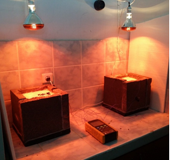

This is an example of a HTML caption with a link.
A propos du ProcEDE
Le laboratoire des Procedes pour l Energie durable et Environnement (ProcEDE) est actuellement reparti sur trois etablissements de l universite Cadi Ayyad qui sont la Faculte des Sciences et Techniques, la Faculte des Sciences Semlalia et l Ecole Normale Superieure.
Actualites
Soutenance de These de doctorat de Mme Fatima-Ezzahra LAFQIR
Le laboratoire PROCEDE a le plaisir de vous annoncer la soutenance de these de doctorat de Mme Fatima-Ezzahra LAFQIR intitulee " ETUDE DU COMPORTEMENT THERMO-AERAULIQUE ET DES PERFORMANCES ENERGETIQUES D UNE MAISON PASSIVE DANS LES SIX CLIMATS DU MAROC"
La soutenance aura lieu le samedi 29 mai a 9h30 a la Faculte des Sciences Semlalia
Actualites
Media
Nouvelle video: Developpement de l ebullition en film autour d un recepteur solaire conique. These de Dylan Lorfing, collaboration PROMES-INSA Toulouse (laboratoire TBI).
04 Juin 2021
Soutenance de These de Mr Haitham LAKHDAR
Haitham LAKHDAR soutiendra sa these intitulee " Methode optique hybride pour la caracterisation d un champ d heliostats "
Le 25 Juin 2021 a 14h a La faculte des Sciences et Techniques
Lun
Mar
Mer
Jeu
Ven
Sam
Dim
Pages
Abonnez-vous


ProcEDE
- Laboratoire des Procedes, Metrologie et des Materiaux pour l Energie et l Environnement
